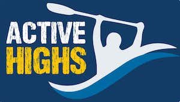

Overview
Purpose
The purpose of this site is to give easy and convenient access for our loyal and new customers to our services. This site's goal is to give out service information down to making a reservation making our customer's visit become a well-planned and ready-to-go adventure experience. Another focus for this site is to showcase or advertise our company to everyone in the country to attract more customers and increase loyalty among our avid customers. We can save more money on promoting new services or offers on this website than on television and radio. Since almost everyone has access to the internet nowadays, we want to make sure that they will see this website as a way to prepare for their adventure experience. We want them to come ready by using this website's features. We also want to increase online traffic to our websites to make our site to be well known to locals and tourists. We will use this site to be competitive and dominate search results for whitewater rafting or other relevant searches on the internet. We want this to become one-stop-shop information for all who wish to experience a whitewater rafting adventure. Hence we will use our website to increase revenue through this passive but engaging marketing strategy.
Audience
Our targeted audiences are both loyal customers and new prospects. Since our service is a one-of-a-kind adventure, we also target groups and individuals who want an adventure experience during their vacation, free time, and holidays. These groups can be a family, group of friends, school, clubs, and organizations that wanted wind up and have fun. We want individuals or groups of all ages as long as they are allowed to do this activity. We want people who consider it a sport or a hobby or those who want to try it. We primarily want to target people who are looking for a fun experience and an escape from busy or stressful work. Also want to attract professionals who want to teach individuals or groups for this kind of experience. We want to accommodate both locals and tourists. We also welcome those who consider themselves daredevils, who want to take on the extreme. We are also looking for those who are finding new trails and paths to take to add to their experience. We want our site to be accessed by all devices capable of running websites. We want those who are afraid or curious to try to attract to give this experience a chance.
Branding
Website Logo
Style Guide
Color Palette
Palette URL:
https://coolors.co/ded8ae-143b63-0868a0-cbf3f0-2ec4b6| Primary | Secondary | Accent 1 | Accent 2 |
|---|---|---|---|
| [#143b63] | [#ded8ae] | [#cbf3f0] | [2EC4B6] |
Typography
Heading Font: Righteous
Paragraph Font: Lato
Normal paragraph example
The best Whitewater Rafting in Colorado, White Water Rafting Company offers rafting on the Colorado and Roaring Fork Rivers in Glenwood Springs. Since 1974, we have been family owned and operated, rafting the Shoshone section of Glenwood Canyon and beyond.
Colored paragraph example
Trips vary from mild and great for families, to trips exclusively for physically fit and experienced rafters. No matter what type of river adventures you are seeking, White Water Rafting Company can make it happen for you.
Navigation
Site Map
Wireframes
Home